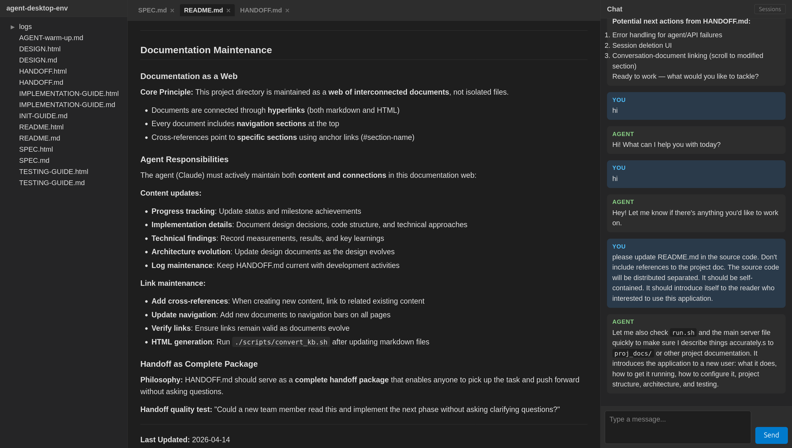

A web application that puts an AI coding agent and your project documents side by side. Browse files, view rendered markdown, and chat with a Claude-powered agent — all in one window, with real-time updates as files change.
New: Multi-project support! Serve multiple projects from a single ADE instance with isolated sessions, lazy resource management, and automatic mode detection.

Working with a coding agent today means typing in a terminal while switching to an editor or browser to read the documents it produces. You can’t point at a paragraph and say “rewrite this” — you have to describe it in words. This app eliminates that friction by putting the conversation and your project documents side by side, with live rendering and a selection-based annotation mechanism that lets you point at content directly.
PATHgit clone https://github.com/ThinkerYzu/docforge.git
cp -r docforge/template my-project
./run.sh my-projectThis copies a docforge project
template, sets up a virtualenv, installs Python dependencies, and starts
the server at http://localhost:9800. The root URL
redirects to the project, and the agent reads
AGENT-warm-up.md on the first session.
You can also point it at any existing directory:
./run.sh /path/to/your/projectOr use an environment variable:
ADE_PROJECT_DIR=/path/to/your/project ./run.shServe multiple projects from a single ADE instance:
# Point to a directory containing multiple project subdirectories
./run.sh /path/to/projects
# Or use environment variable
ADE_PROJECT_DIR=/path/to/projects ./run.shADE auto-detects the mode:
/{project_name}Each project gets isolated sessions, its own agent process, and independent file watching. Resources are created lazily (only when accessed) and cleaned up after idle timeout (default 30 min).
| Variable | Default | Description |
|---|---|---|
ADE_PROJECT_DIR |
— | Project directory (single-project) or projects root (multi-project). Mode auto-detected. |
ADE_PORT |
9800 |
Port the server listens on |
ADE_INIT_FILE |
AGENT-warm-up.md |
File the agent reads at the start of each new session. Can be
overridden per-project via .ade-project file. |
ADE_PROJECT_IDLE_TIMEOUT |
1800 |
Seconds before cleaning up idle project resources (30 min) |
ADE_MAX_ACTIVE_PROJECTS |
10 |
Maximum simultaneously active projects (multi-project mode) |
ADE_INHIBIT_SLEEP |
0 |
Set to 1 to hold a GNOME sleep/idle inhibitor while the
agent is active (prevents suspend mid-response) |
The Claude Code subprocess runs with the project
directory as its working directory — not the multi-project
root. In single-project mode that is the path you passed to
run.sh (or ADE_PROJECT_DIR). In multi-project
mode each project’s agent uses its own subdirectory, so relative file
paths, Bash commands, and file reads/writes all resolve against that
project’s root.
When a new chat session starts, the agent automatically reads the
file specified by ADE_INIT_FILE (relative to the project
directory). This lets you give the agent background on your project —
architecture, conventions, current status — so it’s productive from the
first message. Create an AGENT-warm-up.md in your project
root, or point ADE_INIT_FILE to any file you prefer.
This project is designed to work with docforge, a doc-driven
development template for AI-assisted projects. Copy docforge’s template
into your project directory and the agent will automatically pick up
AGENT-warm-up.md on each new session — initializing the
project on the first session, and loading context from
HANDOFF.md on subsequent sessions.
.ade-project)In multi-project mode, you can customize individual projects by
adding a .ade-project JSON file to the project root:
{
"title": "My Project",
"description": "A custom description shown on the project listing page",
"init_file": "docs/SETUP.md"
}Fields:
title — Display name (defaults to directory name)description — Brief description shown on listing
pageinit_file — Override ADE_INIT_FILE for
this projectMode Detection: The presence of
.ade-project explicitly marks a directory as a single
project. ADE also uses heuristics (checks for README.md,
SPEC.md, DESIGN.md,
AGENT-warm-up.md, .git) to detect single
projects vs multi-project roots.
--input-format stream-json --output-format stream-json,
giving it full tool access and multi-turn memory. One long-lived process
per project.watchfiles (inotify)
detects saves and pushes updates over WebSocket. One watcher per active
project, handles atomic writes, debounces rapid events.sessions/{project_name}/).source venv/bin/activate
pytest tests/Some tests drive the UI via a WebSocket eval channel and require a
running browser tab. Pass --tab-id <id> to target a
specific tab.
.
├── run.sh # Entry point — venv setup + server launch
├── requirements.txt # Python dependencies
├── server/ # FastAPI backend
│ ├── main.py # App setup, routes, WebSocket, lifespan
│ ├── agent.py # Claude Code CLI subprocess management
│ ├── session.py # Session persistence (project-scoped)
│ ├── file_watcher.py # inotify filesystem watcher (watchfiles)
│ ├── websocket.py # WebSocket connection manager
│ ├── project_manager.py # Multi-project lifecycle management
│ └── projects.py # Project discovery and metadata
├── static/ # Frontend (vanilla HTML/CSS/JS, no build step)
│ ├── index.html # Three-panel layout (project UI)
│ ├── projects.html # Project listing page (multi-project mode)
│ ├── css/
│ │ ├── style.css # Dark-themed styles
│ │ └── projects.css # Project listing styles
│ └── js/
│ ├── app.js # Init, WebSocket, workspace restore
│ ├── filetree.js # File tree panel
│ ├── document.js # Document viewer — tabs, rendering, scroll
│ ├── chat.js # Chat — messaging, streaming, annotations
│ ├── projects.js # Project listing logic
│ └── marked.min.js # Markdown parser (vendored)
├── tests/ # Test suite (64 tests)
└── sessions/ # Saved session files (nested by project)
├── project-a/
└── project-b/